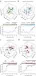

Nature Methods
- 4, 445 - 453 (2007)
Published online: 1 April 2007; | doi:10.1038/nmeth1032
Image-based multivariate profiling of drug responses from single cellsLit-Hsin Loo, Lani F Wu & Steven J AltschulerDepartment of Pharmacology, University of Texas Southwestern Medical Center, 5323 Harry Hines Blvd., ND 9.214, Dallas, Texas 75390, USA.
Correspondence should be addressed to Steven J Altschuler steven.altschuler@utsouthwestern.edu  | | |
Quantitative analytical approaches for discovering new compound mechanisms are required for summarizing high-throughput, image-based drug screening data. Here we present a multivariate method for classifying untreated and treated human cancer cells based on 300 single-cell phenotypic measurements. This classification provides a score, measuring the magnitude of the drug effect, and a vector, indicating the simultaneous phenotypic changes induced by the drug. These two quantities were used to characterize compound activities and identify dose-dependent multiphasic responses. A systematic survey of profiles extracted from a 100-compound compendium of image data revealed that only 10–15% of the original features were required to detect a compound effect. We report the most informative image features for each compound and fluorescence marker set using a method that will be useful for determining minimal collections of readouts for drug screens. Our approach provides human-interpretable profiles and automatic determination of on- and off-target effects. | | |
The recent increased availability of high-precision robotic liquid handling machinery, automated fluorescence microscopy and high-performance computing has enabled rapid advances in the development of high-throughput image-based assays. These assays permit quantitative observation of phenotypes from single cells, including cellular morphology, protein expression, localization and post-translational modifications. Automated image processing algorithms for cell segmentation and feature extraction offer the ability to extract objective measurements of these multidimensional phenotypes, and are particularly useful for the analysis of image data sets that are too large, or of phenotypes that are too subtle, for reliable human scoring1,
2,
3,
4. Comparisons of these measurements obtained from cells under different experimental conditions can be used to derive profiles that summarize phenotypic changes in response to different pharmacological or physiological perturbations, and presumably reveal important biological effects. Several recent pioneering studies have developed high-throughput image-based assay approaches to build profiles to characterize drug effects5, screen for small molecules6, classify subcellular localizations7,
8, and characterize whole-genome phenotypes by using RNA interference9 or gene-deletion libraries10.
Several bottlenecks in data analysis have limited the full potential of high-throughput image-based assays2,
4. First, one of the challenges has been to effectively transform distributions of multidimensional, phenotypic measurements from single cells into multivariate profiles that are both machine and human interpretable. Common profiling approaches based on univariate comparisons of responses miss feature correlations at the single-cell level. Multivariate profiling approaches consider dependencies among features, and may improve our ability to characterize, compare and predict cellular changes in response to external perturbations. However, profiles built on common multivariate hypothesis tests that reduce high-dimensional data to a single test statistic may have limited ability to discriminate among different classes of perturbations. Second, beyond the standard challenges of image preprocessing, cell segmentation and feature extraction, which are partially solved by available automated image analysis software2, it is in fact not obvious which or how many features should be measured2. Current image-based assays for drug screening usually compute a small number of features (<10) selected by experts11,
12. An unbiased approach allowing for the discovery of unexpected phenotypes calls for the inclusion of many objective measurements. Inclusion of irrelevant features, however, not only increases the overhead of computation and storage, but also reduces the sensitivity of the data analysis. A final challenge has been to determine the effective dosage range and quantify possible multiphasic response of a compound. The traditional dose-response curve based on viable cell counts may not be able to distinguish between different responses of a compound within effective concentrations. Overcoming this challenge is essential for discovering new, dose-dependent actions of compounds by image-based assays.
Here we present an approach for computing profiles that addresses the challenges discussed above. First, we used a support vector machine (SVM)13 algorithm to find 'optimal' hyperplanes separating treated and untreated populations of cells in multidimensional feature space. The hyperplane provides two easily interpretable quantities: its classification accuracy score, indicating the degree to which it separates the populations, and its normal vector, used as a multivariate profile, indicating the 'phenotypic direction' of greatest separation between the two cellular populations. Second, we used an algorithm to iteratively remove sets of features without a loss of classification accuracy and determined the most informative feature for each compound and fluorescence marker set. Unlike dimensionality-reduction approaches based on data transformation, such as principal component analysis14, we did not transform the coordinates of our original feature space and thereby retained human interpretability of the final profiles. Finally, we developed a dosage-clustering algorithm for partitioning dosage series into distinct compound responses, and used the classification accuracy score to detect effective single or multiphasic responses from these clusters of dosage series.
We applied our methods to a compendium of 100 compounds. We identified single or multiphasic responses for these compounds, and systematically compared the importance of different fluorescence marker sets and image features on characterizing these compounds. Compared with a previous univariate analysis performed on the same data set5, our new approach provided profiles that gave better classification accuracies, and detected effects of several categories of compounds that were completely missed. Additionally, using small sets of informative features, we were able to detect phenotypic changes that could be used to group compounds almost perfectly into clusters according to their known targets and revealed interesting associations between different categories of compounds.
Results
Overview of the multivariate profiling method
For a given compound, our method for constructing multivariate dose-dependent profiles consisted of five major steps (Fig. 1). In the first step, we applied low-level image preprocessing, cell segmentation and image-feature extraction algorithms to fluorescence microscopy images of treated and control cells. The phenotype of each cell was represented by a vector of measured values in the multidimensional feature space. The phenotypes of the populations of treated and control cells were thereby represented as two distributions of points within the feature space (Fig. 1a). These two distributions might be highly overlapping at low compound dosages but easily separable at high compound dosages.
In the second step, for each dosage, we used an SVM algorithm13 with linear kernel function (Supplementary Methods online) to determine an 'optimal' separating hyperplane between treated and control distributions. The unit normal vector to the hyperplane indicates the direction of maximum separation between the two distributions, and its coefficients indicate the relative importance of each feature in classifying treated and control cells. The classification accuracy (ranging from 50% (random) to 100% (perfect)) reflects the separability of the two cellular distributions (Fig. 1b). A single compound at different dosages, and different compounds with different targets, may induce different phenotypic changes. Thus, unit normal vectors associated with hyperplanes of significant classification accuracies could be used as multivariate compound-dosage profiles.
In the third step, for each extracted profile, we removed redundant and noninformative features using an SVM recursive feature elimination (SVMRFE) algorithm15 (Fig. 1c). We also evaluated several other feature-selection approaches for classification accuracy, random feature selection percentage, feature selection number and computational time (Supplementary Note online).
In the fourth step, we partitioned the titration series for each compound into ranges with minimum profile dissimilarity (Fig. 1d). For each partition, we obtained a representative dosage range profile (d-profile) by averaging the partition's constituent profiles that were both statistically significant (Fig. 1b) and reproducible (as determined by comparing replicate experiments). Multiple d-profiles for a compound suggested possible multiphasic responses. Clusters with no d-profiles were discarded from further analysis, allowing the automated removal of poorly reproducible or ineffective dosages.
In the fifth step, we used the d-profiles extracted for a library of compounds in typical applications of high-throughput image-based assays, such as drug screening, phenotypic change detection and category prediction (Fig. 1e). For drug screening, we selected the compounds with d-profiles most similar to that of a reference d-profile to be lead candidates. For phenotypic change detection, we selected and compared informative features for a subset of the profiles that gave the best drug screening performance. Finally, for category prediction, we inferred the category of an 'uncharacterized' compound from previously categorized compounds with similar d-profiles.
Our method provides a general and modular framework for computing multivariate profiles of drug responses. Depending upon the specific application, other cell segmentation, multivariate feature selection and clustering validation algorithms may be substituted for the ones presented here.
Phenotypic profiling of the 100-compound compendium
To assess the performance of our multivariate approach, we applied our methods to a compendium of fluorescence microscopy images5 in which HeLa cells were treated with 100 compounds, dissolved in dimethyl sulfoxide (DMSO), over 13 threefold titrations (Supplementary Methods). The compounds represented 20 categories of activities, selected to cover mechanisms of toxicity, signaling pathways and therapeutic targets in cancer and other diseases (Supplementary Methods). We assayed compound effects in duplicate on 384-well plates, using four sets of multiplexed molecular markers: DNA-SC35-anillin, DNA-p53-cFos, DNA-pp38-pERK and DNA-microtubule-actin (Fig. 2a). On average, 2,413  852 (mean s.d.) cells were captured per well, from 103,580 images per marker set, to yield a total of 37 million individual identified cells. As controls, we used cells treated with DMSO alone. 852 (mean s.d.) cells were captured per well, from 103,580 images per marker set, to yield a total of 37 million individual identified cells. As controls, we used cells treated with DMSO alone.
| | |
To gather a comprehensive collection of phenotypic measurements for each marker set and each cell, we computed the values of 296 image features from the DNA and nonDNA regions (Supplementary Methods), including 14 morphology features (measuring shape properties of the nuclear and cellular domains), 24 intensity features (measuring the expression levels of the stained proteins in different cellular compartments), 78 Haralick texture features16 (measuring the spatial patterns of stained proteins), 13 moment features and 147 Zernike features7,
17 (both measuring the mass distributions of stained proteins). Although most of these features were derived from the measurements of individual markers, some features measured information from more than one marker (such as the spatial correlation between the intensities of two different markers). To test the robustness of our method in removing irrelevant features, we also included 20 features with randomly generated values (uniformly distributed between –1 and 1).
Importance of features and marker sets
Many of the phenotypic changes were readily observable, whereas others were less obvious or too subtle to be discerned by eye (Fig. 2a). For most of the compounds, automated feature elimination reduced the number of selected features needed for optimal classification to around 20–40 features (Supplementary Fig. 1 online), indicating that the original feature set was highly redundant for any particular compound. Random features were consistently eliminated early in the iterative process (Fig. 2b) demonstrating the effectiveness of feature selection to automatically remove features with little discriminative information.
We compared the importance of all feature categories across different compounds on the same marker set. Despite the consistency in the number of selected features, the types of retained features were highly diverse (Fig. 2c). For example, on the DNA-SC35-anillin marker set, texture features were more important for cholesterol inhibitors, but less important for compounds such as actin and DNA replication inhibitors. Overall, profile coefficients corresponding to texture and intensity features had the highest absolute values, whereas morphology, Zernike and moment features had comparatively lower absolute values.
Next we compared the importance of all feature categories across different marker sets on the same compound. In general, texture features were more important on the DNA-SC35-anillin and DNA-MT-actin marker sets than on the DNA-cFos-p53 and DNA-pp38-pERK marker sets, whereas the reverse was true for intensity features (Fig. 2c). The results suggested that spatial pattern information was most relevant on the markers measuring cytoskeleton (DNA-MT-actin) or proteins with cell cycle–dependent localization (DNA-SC35-anillin), and intensity information was most relevant on the markers measuring transcription factors (DNA-cFos-p53) or cell-signaling proteins (DNA-pp38-pERK).
d-profile extraction
We considered compound effects significant only when our ability to separate treated from control cells was significantly greater than our ability to separate control cells from different replicated wells. The classification accuracy significance threshold at P = 0.05 estimated on every plate was much higher than 50% (Fig. 3), and occasionally reached as high as 90%. The high well-to-well variability might be due in part to the microenvironment difference in each well on microtiter plates18,
19, and was accounted for in our null distribution estimation process.
| | Figure 3. Titration clustering reveals multiphasic drug effects. | | | |  | (a–d) Titration clustering grouped profiles Wi obtained at different concentration index i into 2 or 3 clusters. Hydroxy urea, 2 clusters (a); oxamflatin, 3 clusters (b); taxol, 2 clusters (c); camptothecin, 3 clusters (d). The numbers of clusters were determined automatically using a clustering validation algorithm in the original feature space (Supplementary Methods). The relative similarities among profiles and the clustering results were visualized using multidimensional scaling plots (top; square with or without cross, profile used or not used for d-profile determination). The classification accuracy and reproducibility of each profile were used to decide if the profile will be retained (bottom; solid blue line, classification accuracy on the first replicate; error bars, standard error of the cross-validation estimation of average classification accuracy; black dashed line, classification accuracy with P = 0.05 on the first replicate). For each cluster, a d-profile was derived from averaging the profiles with significant classification accuracy (above the dashed line) and reproducible across two replicates (triangle). Most compounds had no effect at the lowest dosage cluster, leaving 1 or 2 d-profiles representing primary and secondary compound effects (1 d-profile, hydroxy urea and oxamflatin; 2 d-profiles, taxol and camptothecin).
Full Figure and legend (75K) |
| |
The classification accuracy curves of most compounds showed classical sigmoidal dose responses, with classification accuracies below the significance threshold at the lowest dosage ranges and well above the significance threshold at the highest dosage ranges. For several compounds, classification accuracies trended slightly upwards for decreasing concentrations at the lowest dosages (Fig. 3), likely due to microtiter-plate-edge effects. Low dosages with significant classification accuracies were usually eliminated from computation of the final d-profiles as their reproducibility scores were mostly below threshold.
The titration clustering algorithm yielded two clusters per compound on 65% of the compounds (Fig. 3a,c), and three clusters per compound on 35% of the compounds (Fig. 3b,d) over all four marker sets. Visualizations of the inter-profile similarities using multidimensional scaling20 showed qualitatively that the profiles largely grouped together by contiguous concentration ranges, with occasional 'jumps' to distinct regions in the feature space (Fig. 3), indicating the possibility of having multiple 'clusters' in drug responses. After removing profiles that were neither significant nor reproducible, one d-profile per compound was derived for 60% of the compounds (Fig. 3a,b) and two or three d-profiles per compound were derived for 18% of the compounds (Fig. 3c,d), corresponding to possible distinct dosage-dependent effects. The remaining 22% of compounds did not give any d-profiles. In total, from the 100-compound compendium, we extracted 100, 100, 89 and 102 d-profiles using the DNA-SC35-anillin, DNA-p53-cFos, DNA-pp38-pERK and DNA-MT-actin marker sets, respectively.
Across different marker sets, 73% of the compounds gave the same number of d-profiles on three or four marker sets. For example, taxol consistently gave 2 d-profiles (Fig. 3c) across all four marker sets (concentration indices 4–5, 2–5 nM and concentration indices 7–13, 47 nM–35  M). This result, based on multivariate phenotypic change measurements, matched a previous result21 reporting a biphasic response of taxol on breast cancer cell lines based on simple viable cell counts (first phase, 5–50 nM and second phase, 5–50 M). M). This result, based on multivariate phenotypic change measurements, matched a previous result21 reporting a biphasic response of taxol on breast cancer cell lines based on simple viable cell counts (first phase, 5–50 nM and second phase, 5–50 M).
Drug-screening performance
To simulate a drug screen for compounds of similar target to a known compound, we selected a d-profile to be the reference profile and used all other d-profiles from the compendium as 'blinded' test profiles. Dissimilarity scores between the reference profile and all other test profiles were computed and ranked. The test profiles that were least dissimilar to the reference profile were selected as 'drug candidates'.
For each reference profile, we estimated its drug screening performance by using prior target annotations as the gold standard. We defined on-target effects as d-profiles whose drug screening performance values were significant under prior target annotations (P < 0.05, area under the receiver operating characteristic curve (AUC)), and defined all other d-profiles as off-target. Notably, many of the compounds with more than one d-profile and at least one on-target d-profile had at least one off-target d-profile (73%, 40%, 67% and 56% on the DNA-SC35-anillin, DNA-p53-cFos, DNA-pp38-pERK and DNA-MT-actin marker sets, respectively; Supplementary Data online). For example, camptothecin had one on-target effect (concentration indices 5–9) and one off-target effect (concentration indices 10–13). This observation suggested that our approach could identify dose-dependent secondary responses that were very different from the primary responses.
To summarize drug-screening performance results, we averaged the performance values of the compounds that had been annotated with the same target category for each marker set (Table 1). Many compound categories gave statistically significant performance values (50%, 32%, 27% and 27% of categories in DNA-SC35-anillin, DNA-p53-cFos, DNA-pp38-pERK and DNA-MT-actin, respectively), even though secondary or tertiary d-profiles were included in the averaging process. Three compound categories (cholesterol, DNA replication and MAPK/ERK pathway inhibitors) gave perfect drug screening performance (AUC value = 1). Comparisons of drug screening performance between this multivariate profiling approach and a previous univariate approach5 showed better compound categorizations (Supplementary Note).
| | Table 1. Drug screening performances are significant for many compound categories | | |  |
Full Table |
| |
We further evaluated the performance of a compound category across different marker sets. Some compound categories induced phenotypic changes that were highly specific for the marker set used. For example, the effects of energy metabolism, PKC, protein degradation and RNA inhibitors could only be detected by the DNA-anillin-SC35 marker set, whereas the effects of MAPK/ERK pathway inhibitors could only be detected by the DNA-pp38-pERK marker set (Table 1). However, actin, cholesterol, DNA replication, histone deacetylase, microtubule and vesicle trafficking inhibitors induced phenotypic changes that could be detected by using at least three of the marker sets (Table 1). Most of these compounds caused cell-cycle arrest.
Common-phenotypic-change detection
We next wanted to identify a small number of features that most discriminated compound categories. For each marker set and compound category, we selected 2–3 representative on-target d-profiles with maximum average drug screening performance. The exclusion of off-target effects permitted the selection of on-target d-profiles from five compound categories not found significant in the drug screening process previously described (Supplementary Note). We then selected 10–15 features from each compound category with the highest average absolute values. We performed a hierarchical biclustering20 of all the representative d-profiles on the union set of all the selected features (Fig. 4 and Supplementary Fig. 2 online).
As expected, as the most discriminative features from each compound category were used, we obtained near-perfect clustering of compounds by category. Some compounds were grouped together by obvious or easily interpretable phenotypic features, such as the pERK total intensity in the DNA region over non-DNA region for compounds affecting microtubules, whereas others were grouped together by nonobvious or new phenotypic features, such as the DNA gray level co-occurrence matrix mean correlation and the pp38 gray level co-occurrence matrix mean sum average for compounds annotated as neurotransmitter inhibitors (Fig. 4). More interestingly, the categories themselves formed natural 'super-clusters' based on common blocks of features, which allowed the identification of common phenotypic changes among these categories. For instance, all three categories of kinase inhibitors (CDK, PI3K and MAPK/ERK) formed a super-cluster (Fig. 4).
To examine whether the most discriminative features reflected changes in cell-cycle phase, we implemented a heuristic cell cycle detector based on DNA features (Supplementary Fig. 3 online). In many cases, the two most discriminative features showed cell cycle–dependent responses. For example, vinblastine increased the density of two subpopulations, which had lower ratios of pERK total intensity in DNA regions to non-DNA regions than the control population (Fig. 4 and Supplementary Fig. 3). One of the subpopulations comprised mostly mitotic cells and another subpopulation, mostly G2 cells (Supplementary Fig. 3), suggesting a G2/M arrest. Notably, our approach also detected phenotypic changes independent of cell-cycle phase. For example, wortmannin increased the pp38 average intensity over DNA average intensity in DNA region of the whole population across all cell-cycle phases (Fig. 4 and Supplementary Fig. 3).
Category prediction
The compound category of a new d-profile can be inferred by comparison to a collection of previously categorized reference d-profiles (Supplementary Data). For instance, comparison of d-profiles indicated that oxamflatin is most similar to trichostatin, scriptaid and apicidin on the DNA-pp38-pERK marker set (Fig. 5a). Although all of these compounds are histone deacetylase inhibitors, oxamflatin, trichostatin and scriptaid are hydroxamic acids having very different chemical structures than apicidin, a cyclic tetrapeptide22. Similarly for the DNA-p53-cFos marker set, the DNA replication inhibitor, hydroxy urea-2, was found to be most similar to aphidicolin and methotrexate, both DNA replication inhibitors, as well as to a replicate of hydroxyl urea-2 with different starting stock concentration (Fig. 5b).
Category prediction for compounds with multiple d-profiles typically matched prior target annotations for at least one of their d-profiles. For camptothecin, its first d-profile was closest to another topoisomerase inhibitor, etoposide, whereas its second d-profile was closest to a CDK inhibitor, alsterpaullone (Fig. 5c), in remarkable agreement with a centrosome profiling study on Chinese Hamster Ovarian (CHO) cells23. For taxol, its first d-profile was closest to sulindac sulfide, a cyclooxygenase inhibitor, whereas its second d-profile was closest to epothilone B and griseofulvin, which stabilize microtubule assemblies similarly to taxol despite dissimilarity in chemical structures24,
25 (Fig. 5d). Microtubule depolymerizing compounds, such as 105D, nocodazole and vinblastine were further away from this group of microtubule stabilizing compounds. These results indicated that our approach has the sensitivity to distinguish compounds affecting the same target, but through different mechanisms.
Discussion
Our approach of profiling compound-dosage responses reduced 300 unbiased single-cell phenotypic features to 20 informative features for each compound and marker set. The large reduction in dimensionality came with greatly enhanced human interpretability of the drug response profiles and improved detection of cellular phenotypic changes, yet at little loss of classification accuracy. Analysis of these selected features suggested informative marker and feature set combinations for detecting and discriminating treated versus control-cell phenotypic changes.
Determination of these feature sets will potentially streamline future screening of compounds with similar effects to a known compound or category of compounds under the same experimental conditions. But detecting new drug effects using new experimental conditions or marker sets may require the reselection of features that cannot be identified a priori. Although we used the SVM recursive feature elimination, other feature-selection algorithms may provide beneficial tradeoffs in computational runtime, classification accuracy and false positive rate appropriate for other data sets and applications.
Separating compound dosage effects into multiple d-profiles resulted in more sensitive screening and raised the possibility of identifying new dosage-dependent mechanisms, even for previously characterized compounds. Our approach to building compound profiles is computationally and experimentally scalable; compound profiles are created independently of each other and allow for incremental growth of a compound compendium.
Cytological profiling provides accurate quantification of complex phenotypic changes that are complementary to other high-throughput approaches, such as transcript profiling, and offers the potential to bring the use of cell-based assays earlier into the drug discovery process2,
26,
27. Our approach is generally applicable for characterizing single-cell phenotypic changes owing to a broad range of external perturbations and internal cellular states. This work provides a platform for future studies, including identification of new drug targets, drug-combination effects and heterogeneous cellular drug responses.
Methods
Data collection.
Detailed protocols for the preparation of the samples and images for the 100-compound compendium are as previously described5.
Data analysis platform.
We performed all of the image and data analysis by using custom software written in Matlab v14.3 (Mathworks), unless otherwise indicated. The software is available to academic laboratories upon request.
Image analysis.
We subtracted background intensities from the images to remove nonuniform background illumination by using the National Institutes of Health ImageJ software. The DNA and nonDNA regions for each and every cell were identified by a watershed segmentation algorithm (Supplementary Methods). We extracted a total of 296 features from these regions. We used previously published software7 to extract texture and Zernike features. We used a semi-automated algorithm to identify potentially bad wells (Supplementary Methods).
Data resampling.
We resampled the treated and control wells to fixed sampling sizes before computing profiles from them. For treated wells, we resampled cells with replacement from each well at one of the nine common sampling sizes (ranging from 100 to 3,500) closest to the actual well cell count, and discarded wells with <100 cells. For the control wells, we resampled a pooled population of cells with replacement from all the wells at the common sampling sizes in proportion to weights assigned to every well. We computed the weights as follows: for tij = 100 minus pairwise classification accuracy between control wells i and j, the eigenvector v corresponding to the largest eigen value of T = {tij} was computed. The components of v, normalized to have unit sum, provided weights for every well. Wells with higher weights tended have low pairwise classification accuracies and had higher probabilities of being sampled28.
Profile and classification accuracy computation.
We estimated a multivariate profile and a classification accuracy score by comparing each treated population resampled from a well to a resampled control population of the same sampling size. We performed the estimation using a twofold cross-validation with 3 randomized fold divisions for a total of 6 trials. The computation of the hyperplane was performed by libsvm v2.81 (http://www.csie.ntu.edu.tw/~cjlin/libsvm). To reduce the computational runtime, we eliminated subsets of 20 features at each iteration (or halved if the number of feature was <20; Fig. 2b). Profiles were oriented toward the direction of the treated population and scaled to have unit sum of the absolute values of their coefficients. We estimated final profile and classification accuracies from the average of the trials.
Feature preprocessing.
During each trial of the above cross-validation, for each feature, we set the outliers outside the 1st and 99th percentile values determined from the training fold to the 1st and 99th percentile values respectively, and scaled the values of each feature linearly to the range of (-1, 1).
Profile dissimilarity.
We measured the dissimilarity between profiles xr and xs by:

where x' is the vector transpose of x.
Profile reproducibility.
We flagged a profile as 'irreproducible' if its dissimilarity to its replicates is more than its dissimilarities to 5% of all other profiles associated with significant classification accuracies.
Combinatorial titration clustering.
For a given number of clusters, k, we used a combinatorial titration clustering algorithm to partition the titration series into k ranges having a minimum between-cluster point scatter20. We determined the optimum number of clusters automatically by choosing the k giving the most stable clustering (Supplementary Methods). Owing to the small number of profiles (13), we only considered k = {2, 3}.
Representative d-profiles selection.
We selected representative d-profiles from compound categories having d-profiles from at least two distinct compounds. Each compound was only allowed to contribute one d-profile. For a category with nd d-profiles, we searched exhaustively for the largest d-profile subset with significant AUC (average P value < 0.05). For ties, we selected the subset with the minimum average P value. When nd > 15, we used a suboptimal procedure to select representative d-profiles (Supplementary Methods). Finally, if the selected subset had more than 3 d-profiles, we selected only the 3 d-profiles with the minimum P values; otherwise, we selected all the d-profiles.
Significance analysis.
For each sampling size, we estimated the null distribution of classification accuracy between the pooled control population and each control well. Each control well was resampled similar to the treated wells (see data resampling above). We estimated the null distribution of classification accuracy by a Parzen-window approach20 with Gaussian kernel and s.d. of 0.02. We adjusted the number of resamplings from 1 (for sampling size of 3,500) to 128 (for sampling size of 100). The significance threshold was determined at P = 0.05 (one tailed).
Given a reference d-profile and its dissimilarity scores to a set of test d-profiles, we scanned the drug candidate selection threshold from 0 to the maximum dissimilarity and plotted the corresponding receiver operating characteristic curve (true versus false positive rates). The area under the receiver operating characteristic curve (AUC) was estimated using the trapezoidal integration, and is equal to the Wilcoxon statistic29. For a large number of samples, the null distribution of Wilcoxon statistic approximates thez-distribution. The significance threshold was determined at P = 0.05 (one tailed).
Additional methods.
Information on the stock plate layout, compound and feature lists, image processing, feature selection and clustering validation algorithms, and quality control process is available in Supplementary Methods and Supplementary Note.
Author contributions
L.-H.L. designed, implemented and performed the profiling methods. All authors contributed to the conception of the overall approach, statistical analysis of the methods and writing of the manuscript.
Note: Supplementary information is available on the Nature Methods website.
Received 25 August 2006; Accepted 21 February 2007; Published online: 1 April 2007.
REFERENCES
- Boland, M.V. & Murphy, R.F. After sequencing: quantitative analysis of protein localization. IEEE Eng. Med. Biol. Mag. 18, 115–119 (1999). | Article | PubMed | ChemPort |
- Lang, P., Yeow, K., Nichols, A. & Scheer, A. Cellular imaging in drug discovery. Nat. Rev. Drug Discov. 5, 343–356 (2006). | Article | PubMed | ChemPort |
- Price, J.H. et al. Advances in molecular labeling, high throughput imaging and machine intelligence portend powerful functional cellular biochemistry tools. J. Cell. Biochem. Suppl. 39, 194–210 (2002). | Article | PubMed | ChemPort |
- Zhou, X. & Wong, S.T.C. Informatics challenges of high-throughput microscopy. IEEE Signal Process. Mag. 23, 63–72 (2006). | Article |
- Perlman, Z.E. et al. Multidimensional drug profiling by automated microscopy. Science 306, 1194–1198 (2004). | Article | PubMed | ISI | ChemPort |
- Tanaka, M. et al. An unbiased cell morphology-based screen for new, biologically active small molecules. PLoS Biol. 3, e128 (2005). | Article | PubMed | ChemPort |
- Boland, M.V. & Murphy, R.F. A neural network classifier capable of recognizing the patterns of all major subcellular structures in fluorescence microscope images of HeLa cells. Bioinformatics 17, 1213–1223 (2001). | Article | PubMed | ISI | ChemPort |
- Conrad, C. et al. Automatic identification of subcellular phenotypes on human cell arrays. Genome Res. 14, 1130–1136 (2004). | Article | PubMed | ISI | ChemPort |
- Neumann, B. et al. High-throughput RNAi screening by time-lapse imaging of live human cells. Nat. Methods 3, 385–390 (2006). | Article | PubMed | ChemPort |
- Ohya, Y. et al. High-dimensional and large-scale phenotyping of yeast mutants. Proc. Natl. Acad. Sci. USA 102, 19015–19020 (2005). | Article | PubMed | ChemPort |
- Gasparri, F., Mariani, M., Sola, F. & Galvani, A. Quantification of the proliferation index of human dermal fibroblast cultures with the ArrayScan high-content screening reader. J. Biomol. Screen. 9, 232–243 (2004). | Article | PubMed | ChemPort |
- Giuliano, K.A. et al. Systems cell biology knowledge created from high content screening. Assay Drug Dev. Technol. 3, 501–514 (2005). | Article | PubMed | ChemPort |
- Vapnik, V.N. Statistical Learning Theory. (John Wiley & Sons, New York, 1998).
- Duda, R.O., Hart, P.E. & Stork, D.G. Pattern Classification 2nd edn. (John Wiley & Sons, New York, 2001).
- Guyon, I., Weston, J., Barnhill, S. & Vapnik, V. Gene selection for cancer classification using support vector machines. Mach. Learn. 46, 389–422 (2002). | Article |
- Haralick, R.M. Statistical and structural approaches to texture. Proc. IEEE 67, 786–804 (1979).
- Teh, C.H. & Chin, R.T. On image analysis by the methods of moments. IEEE Trans. Pattern Anal. Mach. Intell. 10, 496–513 (1988). | Article |
- Lundholt, B.K., Scudder, K.M. & Pagliaro, L. A simple technique for reducing edge effect in cell-based Assays. J. Biomol. Screen. 8, 566–570 (2003). | Article | PubMed | ISI | ChemPort |
- Malo, N., Hanley, J.A., Cerquozzi, S., Pelletier, J. & Nadon, R. Statistical practice in high-throughput screening data analysis. Nat. Biotechnol. 24, 167–175 (2006). | Article | PubMed | ChemPort |
- Hastie, T., Tibshirani, R. & Friedman, J. The Elements of Statistical Learning: Data Mining, Inference, and Prediction. (Springer-Verlag, New York, 2001).
- Yeung, T.K., Germond, C., Chen, X. & Wang, Z. The mode of action of taxol: apoptosis at low concentration and necrosis at high concentration. Biochem. Biophys. Res. Commun. 263, 398–404 (1999). | Article | PubMed | ISI | ChemPort |
- Yoo, C.B. & Jones, P.A. Epigenetic therapy of cancer: past, present and future. Nat. Rev. Drug Discov. 5, 37–50 (2006). | Article | PubMed | ChemPort |
- Perlman, Z.E., Mitchison, T.J. & Mayer, T.U. High-content screening and profiling of drug activity in an automated centrosome-duplication assay. ChemBioChem 6, 145–151 (2005). | Article | PubMed |
- Bollag, D.M. et al. Epothilones, a new class of microtubule-stabilizing agents with a taxol-like mechanism of action. Cancer Res. 55, 2325–2333 (1995). | PubMed | ISI | ChemPort |
- Panda, D., Rathinasamy, K., Santra, M.K. & Wilson, L. Kinetic suppression of microtubule dynamic instability by griseofulvin: implications for its possible use in the treatment of cancer. Proc. Natl. Acad. Sci. USA 102, 9878–9883 (2005). | Article | PubMed | ChemPort |
- Clemons, P.A. Complex phenotypic assays in high-throughput screening. Curr. Opin. Chem. Biol. 8, 334–338 (2004). | Article | PubMed | ISI | ChemPort |
- Dove, A. Drug screening-beyond the bottleneck. Nat. Biotechnol. 17, 859–863 (1999). | Article | PubMed | ChemPort |
- Maciag, K. et al. Systems-level analyses identify extensive coupling among gene expression machines. Mol. Syst. Biol. [online] 2, 0003 (2006) (doi:doi: 10.1038/msb4100045).
- Hanley, J.A. & McNeil, B.J. The meaning and use of the area under a receiver operating characteristic (ROC) curve. Radiology 143, 29–36 (1982). | PubMed | ISI | ChemPort |
Acknowledgments
We thank S. Johnson from the Texas Advanced Computing Center for high-performance computing technical assistance, and all members of the Altschuler and Wu lab at the UT Southwestern Medical Center for stimulating discussions. This research was supported by the Endowed Scholars program at UT Southwestern Medical Center and the Welch Foundation (I-1619, I-1644).
Competing interests statement:
The authors declare
no competing financial interests. |